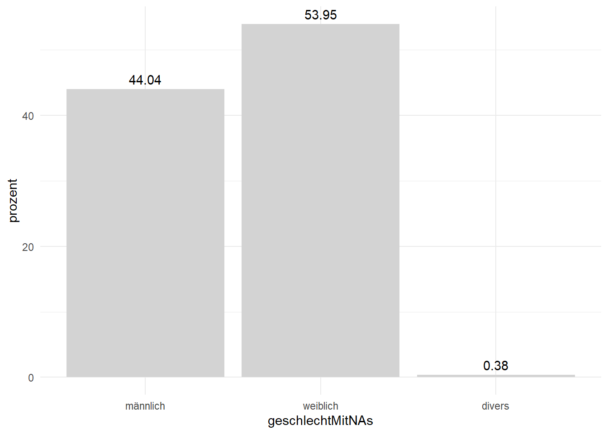
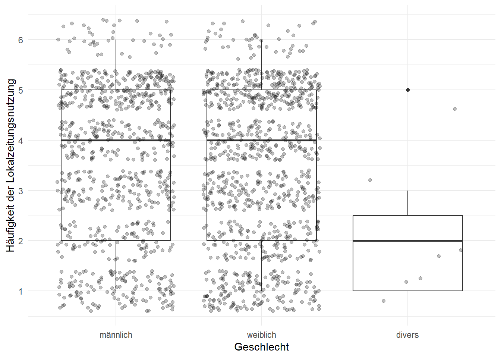

# Installiert das Paket "DescTools", falls es noch nicht installiert ist. Andernfalls wird es geladen.
if(!require(DescTools)){
install.packages("DescTools")
}Lade nötiges Paket: DescToolsIn diesem Kapitel werden wir uns mit der deskriptiven Datenanalyse beschäftigen. Bevor Sie lernen, wie das in R geht, benötigen Sie ein paar statistische Grundlagen, die im untenstehenden Video erläutert werden. Für den zweiten Teil sollten Sie ein neues Skript anlegen.
In diesem Abschnitt werden wir uns anschauen, wie wir die verschiedenen Lagemaße aus dem Video in R berechnen können. Außerdem lernen Sie, wie Sie Daten in Abhängigkeit ihres Skalenniveaus visualisieren können.
R hat nach der Installation keine Funktion, die den Modus (oder die Modi) einer Verteilung ermittelt. Wir können aber das Paket DescTools installieren, die eine solche Funktion enthält.
# Installiert das Paket "DescTools", falls es noch nicht installiert ist. Andernfalls wird es geladen.
if(!require(DescTools)){
install.packages("DescTools")
}Lade nötiges Paket: DescToolsAnschließend laden wir wieder den Datensatz und wandeln die Geschlechtsabfrage um. Den Code kennen Sie schon aus dem letzten Kapitel. Da für dieses Kapitel ein neues Skript sinnvoll ist, führen wir auch den Code noch mal aus.
# Lädt das tidyverse
library(tidyverse)── Attaching core tidyverse packages ──────────────────────── tidyverse 2.0.0 ──
✔ dplyr 1.1.4 ✔ readr 2.1.5
✔ forcats 1.0.0 ✔ stringr 1.5.1
✔ ggplot2 3.5.1 ✔ tibble 3.2.1
✔ lubridate 1.9.3 ✔ tidyr 1.3.1
✔ purrr 1.0.2
── Conflicts ────────────────────────────────────────── tidyverse_conflicts() ──
✖ dplyr::filter() masks stats::filter()
✖ dplyr::lag() masks stats::lag()
ℹ Use the conflicted package (<http://conflicted.r-lib.org/>) to force all conflicts to become errors# Einlesen der Daten
df_lokal <- read.csv("Daten/lokalkommunikation.csv")
# Erstellt eine Spalte aus der Geschlechtsabfrage. Erst wird der Wert "keine Angabe" als fehlend deklariertm dann wird ein Faktor mit den übrigen drei Kategorien erstellt
df_lokal <- df_lokal |>
mutate(geschlechtMitNAs = na_if(A602, 4)) |>
mutate(geschlechtMitNAs = factor(geschlechtMitNAs, labels = c("männlich", "weiblich", "divers")))Anschließend können wir die Mode()-Funktion aus dem DescTools-Paket verwenden. Um damit den Modus zu berechnen, müssen wir die Funktion innerhalb der dplyr-Funktion summarise() aufrufen. Diese verdichtet Datensätze. Schauen wir uns einmal an, was passiert, wenn wir Mode() einfach entsprechended ausführen:
#Versucht den Modus der Spalte geschlechtMitNAs zu berechnen
modus_geschlecht <- df_lokal |>
summarise(Modus = Mode(geschlechtMitNAs))
modus_geschlecht Modus
1 NAWie Sie sehen, gibt die Funktion ein NA zurück. Das ist Rs Art uns zu sagen, dass eine Berechnung nicht durchgeführt werden kann, weil die Daten fehlende Werte enthalten. Wir können das Problem beheben, indem wir der Mode()-Funktion das Argument na.rm = TRUE übergeben. na.rm steht für NA remove. Mit dem Wert TRUE sagen wir also, dass fehlende Werte vor der Berechnung entfernt werden sollen.
#Berechnet den Modus der Spalte geschlechtMitNAs
modus_geschlecht <- df_lokal |>
summarise(Mode(geschlechtMitNAs, na.rm = TRUE))
modus_geschlecht Mode(geschlechtMitNAs, na.rm = TRUE)
1 weiblichNun sehen wir, dass mit 996 Fällen der Wert weiblich am häufigsten vorkommt.
Schauen wir uns als nächstes an, wie Sie nominale Daten bzw. den Modus visualisieren können. Im letzten Kapitel wurde in Kürze das tidyverse vorgestellt und auf das Paket ggplot2 verwiesen, mit dem wir Plots erstellen können.
Im Folgenden werden Schritt für Schritt ein einfaches Balkendiagramm erstellen und es nach und nach verbessern. Wir fangen damit an, dass wir das tidyverse laden. Wir erstellen dann ein neues Objekt für unseren Plot. Dazu geben wir unseren Datensatz mit der Pipe an die Funktion ggplot() weiter. Das ist die Hauptfunktion des Pakets. Üblicherweise wird innerhalb dieser Funktion die Funktion aes() (für aesthetics) aufgerugen, in der wir je nach Diagramm angeben, welche Spalten auf der x- und y-Achse dargestellt werden soll. Für ein Balkendiagramm benötigen wir nur die x-Achse, geben also x = geschlechtMitNAs an. Damit sagen wir erstmal nur, welche Spalte wir darstellen wollen, aber noch nichts darüber, was für eine Darstellung es werden soll. Um die Art des Diagramms festzulegen, gibt es in ggplot2 unzählige Funktionen, die alle mit geom_ beginnen (für geometry). Hinter dem Unterstrich folgt dann der (englische) Name des Diagrammtyps. In unserem Fall eines Balkendiagramms, heißt die entsprechende Funktion geom_bar(). Anders als sonst, verbinden wir die Funktionen in ggplot2 nicht über die Pipe, sondern ein Pluszeichen. In der Summe sieht der Code dann so aus:
# Erstellt ein einfaches Balkendiagramm der Geschlechtsabfrage
plotGeschlecht <- df_lokal |>
ggplot(aes(x = geschlechtMitNAs))+
geom_bar()
plotGeschlechtDas ist - nun ja - sagen wir mal, es ist nicht sonderlich hübsch. Folgende Dinge fallen auf:
NAs, dabei enthalten diese ja per definitionem keine Informationen.geschlechtMitNAs und count) sind nicht gerade selbsterklärend.Diese Liste können wir nun einfach abarbeiten. Manchmal ist es sinnvoll, die Daten noch ein bisschen aufzubereiten, bevor wir sie an ggplot() übergeben. Dafür deklarieren wir ein neues Objekt, das die Daten enthalten soll. Als erstes können wir dann mit der filter()-Funktion, die Sie im letzten Kapitel kennengelernt haben, die NAs entfernen. Anschließend nutzen wir die group_by()-Funktion aus dplyr. Diese Funktion sorgt dafür, dass die nachfolgenden Funktionen nicht auf den gesamten Datensatz angewendet werden, sondern auf die jeweiligen Gruppen (männlich, weiblich, divers). Anschließend nutzen wir wieder die summarise()-Funktion. Dort können wir die Prozentwerte der einzelnen Gruppen mit der folgenden Formel berechnen: n()/nrow(df_lokal)*100. n() gibt die Anzahl der Fälle zurück. Durch das Aufrufen von group_by() sind es hier die Fälle pro Ausprägung von geschlechtMitNAs. Diesen Wert teilen wir durch nrow(df_lokal). Diese Funktion gibt die Anzahl der Zeilen im kompletten Datensatz zurück. Das Ergebnis multiplizieren wir mit 100, um einen Prozentwert zu erhalten. Als letztes nutzen wir mutate(), um die Prozentwerte auf zwei Nachkommastellen zu runden. Das Ergebnis sehen Sie unten:
# Erstellt einen reduzierten Datensatz, der die relativen Häufigkeiten der Ausprägungen von geschlechtMitNAs enthält
df_plot_geschlecht <- df_lokal |>
filter(!is.na(geschlechtMitNAs)) |>
group_by(geschlechtMitNAs) |>
summarise(prozent = n()/nrow(df_lokal)*100) |>
mutate(prozent = round(prozent, 2))
df_plot_geschlecht# A tibble: 3 × 2
geschlechtMitNAs prozent
<fct> <dbl>
1 männlich 44.0
2 weiblich 54.0
3 divers 0.38Wenn wir diesen Datensatz an ggplot() übergeben und versuchen, ein Balkendiagramm zu erstellen, haben wir zwar keinen Balken für NA mehr, dafür ein neues Problem: Alle Balken sind gleich hoch.
# Versucht, ein Balkendiagramm der Geschlechtsabfrage ohne NAs zu erstellen
plotGeschlecht <- df_plot_geschlecht |>
ggplot(aes(x = geschlechtMitNAs))+
geom_bar()
plotGeschlecht
Um dieses Problem zu beheben, können wir angeben, dass die y-Achse den Wert aus der Spalte prozent darstellen soll. Zusätzlich müssen wir beim Aufrufen von geom_bar() das Argument stat = "identity" angeben. Damit sagen wir der Funktion, dass sie nichts berechnen muss, sondern wir schon die finalen Werte als y-Wert angegeben haben.
# Erstellt ein Balkendiagramm der relativen Häufigkeiten der Geschlechtsabfrage ohne NAs
plotGeschlecht <- df_plot_geschlecht |>
ggplot(aes(x = geschlechtMitNAs, y = prozent))+
geom_bar(stat = "identity")
plotGeschlechtAls nächstes wollen wir die Werte beschriften. Dazu fügen wir unserem Plot eine neue geom-Funktion hinzu, nämlich geom_text(). Dieser Funktion übergeben wir auch wieder aes(), um zu bestimmen, was angezeigt werden soll. Das Argument für Beschriftungen lautet label. Als Wert können wir die Spalte prozent angeben. Die Standardeinstellung ist, dass der Wert an seine Position auf der y-Achse geschrieben wird. Das ist etwas unpraktisch, da dort ja auch die Balken aufhören. Indem wir geom_text() das Argument vjust (für vertical justification) und den Wert -0,5 (in R reicht -.5) übergeben, können wir die Beschriftung leicht nach oben verschieben.
# Erstellt ein beschriftetes Balkendiagramm der relativen Häufigkeiten der Geschlechtsabfrage ohne NAs
plotGeschlecht <- df_plot_geschlecht |>
ggplot(aes(x = geschlechtMitNAs, y = prozent))+
geom_bar(stat = "identity")+
geom_text((aes(label = prozent)), vjust = -.5)
plotGeschlechtAls nächstes passen wir die Farben etwas an. Gleich vorab: ggplot2 bietet nahezu unendlich viele Möglichkeiten, das Aussehen von Diagrammen anzupassen. Hier machen wir es uns relativ einfach und nutzen vorhandene Funktionen. So wie es viele geom_Funktionen gibt, gibt es auch einige theme_ Funktionen. Hier ergänzen wir theme_minimal() zu unserem Diagramm. Damit wird zwar der Hintergrund, nicht aber die Farbe der Balken angepasst. Das können wir tun, indem wir der geom_bar()-Funktion das Argument fill und eine Farbe übergeben. Diese müssen auf Englisch angegeben werden. Hier verwenden wir ein helles grau.
# Erstellt ein beschriftetes Balkendiagramm der relativen Häufigkeiten der Geschlechtsabfrage ohne NAs
plotGeschlecht <- df_plot_geschlecht |>
ggplot(aes(x = geschlechtMitNAs, y = prozent))+
geom_bar(stat = "identity", fill = "lightgrey")+
geom_text((aes(label = prozent)), vjust = -.5)+
theme_minimal()
plotGeschlecht
Als letztes ändern wir die Achsenbeschriftungen. Dazu fügen wir die labs()-Funktion hinzu. Mit den Argumenten x und y können wir die Beschriftung anpassen.
# Erstellt ein beschriftetes Balkendiagramm der relativen Häufigkeiten der Geschlechtsabfrage ohne NAs
plotGeschlecht <- df_plot_geschlecht |>
ggplot(aes(x = geschlechtMitNAs, y = prozent))+
geom_bar(stat = "identity", fill = "lightgrey")+
geom_text((aes(label = prozent)), vjust = -.5)+
theme_minimal()+
labs(x = "Geschlecht", y = "relative Häufigkeit in Prozent")
plotGeschlechtAnders als beim Modus gibt es für den Median eine R-Funktion, die wir ohne Weiteres nutzen können: die median()-Funktion. Auch hier müssen wir darauf achten, na.rm = TRUE anzugeben, damit der Median berechnet werden kann. Im folgenden Beispiel berechnen wr den Median der Spalte A203_06. In der Spalte ist codiert, wie häufig die Befragten Lokalzeitungen lesen (von 1 = “nie” bis 6 = “mehrmals täglich”).
# Benenntdie Spalte A203_06 in lokalzeitung um
df_lokal <- df_lokal |>
rename(lokalzeitung = A203_06)
# Berechnet den Median der Lokalzeiungsnutzung
median_lokalzeitung <- df_lokal |>
summarise(median = median(lokalzeitung, na.rm = TRUE))
median_lokalzeitung median
1 4Der Median ist 4, was einer Nutzung mehrmals pro Woche entspricht. Es gibt viele verschiedene Möglichkeiten, den Median bzw. die Verteilung von ordinalen Daten zu visualisieren. Bei wenigen Ausprägungen, so wie im Fall der Nutzung von Lokalzeitungen, können wir ähnlich vorgehen wie beim Modus oben. Dazu müssen wir die Spalte in einen Faktor umwandeln, bevor wir sie an ggplot() übergeben. Anschließend gehen wir ähnlich vor wie oben, allerdings bleiben wir der einfachheithalber bei absoluten Häufigkeiten. Eine relevante Ergänzung nehmen wir aber vor: Mit der geom_vline()-Funktion (für vertical line) und dem Argument xintercept = 4, können wir eine Linie hinzufügen, die den Median anzeigt.
# Wandelt die Nutzung von Lokalzeitungen in einen Faktor um und plottet die Daten als Balkendiagramm
balkenPlot_lokalzeitung <- df_lokal |>
mutate(lokalzeitungFaktor = factor(lokalzeitung, labels = c("nie", "weniger als ein Mal im Monat",
"mehrmals im Monat", "mehrmals in der Woche",
"täglich", "mehrmals täglich"))) |>
filter(!is.na(lokalzeitungFaktor)) |>
ggplot(aes(x = lokalzeitungFaktor))+
geom_bar(fill = "lightgrey")+
theme_minimal()+
labs(x = "Nutzung von Lokalzeitungen", y = "Häufigkeit")+
geom_vline(xintercept = 4, linetype = "dashed")
balkenPlot_lokalzeitung
Das ist schon sehr nah an einer akzeptablen Darstellung, aber die Wertbeschriftungen sehen furchtbar aus! Hier müssen wir etwas Hand anlegen und Zeilenumbrüche einfügen. Die Beschriftungen können wir mit der Funktion scale_x_discrete() und darin mit dem labels-Argument anpassen. Um einen Zeilenumbruch hinzuzufügen, können wir an einer beliebigen Stelle in einem string \n ergänzen. Diese Funktion können wir mit einem + unserem bisherigen Objekt balkenPlot_lokalzeitung hinzufügen:
# Verändert die Beschriftungen der Balken
balkenPlot_lokalzeitung <- balkenPlot_lokalzeitung+
scale_x_discrete(labels=c("nie" = "nie", "weniger als ein Mal im Monat" = "weniger als\n ein Mal im Monat",
"mehrmals im Monat" = "mehrmals\n im Monat", "mehrmals in der Woche" =
"mehrmals\n in der Woche", "täglich" = "täglich",
"mehrmals täglich" = "merhmals\n täglich"))
balkenPlot_lokalzeitungEine andere häufige Visualisierung von ordinalen Daten ist der sogenannte Boxplot, der mit der Funktion geom_boxplot() erstellt wird. Beachten Sie im Beispiel unten, dass wir die Spalte lokalzeitung im Aufruf von ggplot() bzw. darin aes() als y-Wert definieren. Wir könnten auch den x-Wert wählen, dann würde der Boxplot auf der Seite liegen.
boxplot_lokalzeitung <- df_lokal |>
filter(!is.na(lokalzeitung)) |>
ggplot(aes(y = lokalzeitung))+
geom_boxplot()+
theme_minimal()+
labs(y = "Häufigkeit der Lokalzeitungsnutzung")
boxplot_lokalzeitungWas Sie hier sehen ist erstmal nicht sonderlich hübsch, sollte aber dennoch kurz erklärt werden: Die dicke schwarze Linie beim Wert 4 zeigt den Median. Die eingekasteten Bereiche darüber und darunter zeigen das 75. bzw. das. 25. Quartil. Oder einfach gesagt: 25 % der Befragten haben den Wert 2 oder weniger angegeben und weitere 25 % den Wert 5 oder mehr. Die Linien nach unten und oben gehen bis zum Minimum bzw. Maximum.
Folgende Probleme hat die Darstellung:
Fangen wir mit den ersten beiden Problemen an. Wir sehen auf der Grafik oben, dass der auf der x-Achse der Bereich von x = -0,4 bis x = 0,4 (was auch immer diese Werte bedeuten mögen!) dargestellt ist und der Boxplot genau diesen Bereich einnimmt. Wir können die Funktion xlim() nutzen, um den dargestellten Bereich zu erweitern. Dazu müssen wir einfach nur zwei Werte angeben, z.B. -1 und 1.
Um die y-Achse etwas schöner zu machen, können wir eine ähnliche Funktion nutzen, wie im Balkendiagramm oben: scale_y_continuous(). Mit dem Argument breaks können wir angeben, welche Werte beschriftet sein sollen. Hier können wir 1:6 angeben, um alle ganzen Zahlen zwischen 1 und 6 anzeigen zu lassen.
boxplot_lokalzeitung <- boxplot_lokalzeitung+
xlim(-1,1)+
scale_y_continuous(breaks = 1:6)
boxplot_lokalzeitungDas sieht schon etwas besser aus. Wir haben nun aber ein neues Problem: Auf der y-Achse werden nun waagerechte Linien zwischen den ganzen Zahlen angezeigt, dabei konnte die Variable diese Werte gar nicht annhemen.
Dieses Problem können wir gemeinsam mit den übrigen Punkte von oben in einem Rutsch erledigen, indem wir die theme()-Funktion nutzen. Diese Funktion kann zugegebenermaßen etwas abschreckend sein. Sie können damit die Darstellung aller einzelnen Elemente eines Plots anpassen oder - und das ist für uns hier aber auch generell häufig entscheidend - sie entfernen! Das Schema ist immer gleich: Sie geben ein Element an und schreiben hinter ein Gleichheitszeichen, wie es dargestellt werden soll. Geben Sie dort element_blank() an, wird das Element entfernt. Das nutzen wir hier um die folgenden Elemente zu entfernen:
axis.text.xpanel.grid.major.x und panel.grid.minor.xpanel.grid.minor.yboxplot_lokalzeitung <- boxplot_lokalzeitung+
theme(axis.text.x = element_blank(),
panel.grid.major.x = element_blank(),
panel.grid.minor.x = element_blank(),
panel.grid.minor.y = element_blank())
boxplot_lokalzeitungDeutlich häufiger werden Sie Boxplots begegnen (oder selbst erstellen), wenn es um die Darstellung mehrerer Gruppen geht. Im folgenden Beispiel sehen Sie einen Boxplot für die Nutzung von Lokalzeitungen nach Geschlecht der Befragten. Im wesentlichen ist er sehr ähnlich wie der Plot oben, allerdings müssen wir diesmal keine Elemente entfernen. Vor allem aber müssen wir im Aufruf von ggplot() bzw. darin aes() angeben, dass das Geschlecht der Befragten auf der x-Achse dargestellt werden soll.
boxplot_lokalzeitung_geschlecht <- df_lokal |>
filter(!is.na(lokalzeitung)) |>
filter(!is.na(geschlechtMitNAs)) |>
ggplot(aes(y = lokalzeitung, x = geschlechtMitNAs))+
geom_boxplot()+
theme_minimal()+
scale_y_continuous(breaks = 1:6)+
labs(y = "Häufigkeit der Lokalzeitungsnutzung", x = "Geschlecht")
boxplot_lokalzeitung_geschlechtDas Ergebnis sieht schon sehr ordentlich aus. Der einsame Punkt in der Spalte divers steht für einen Ausreißer: Eine Person liest deutlich höufiger Lokalzeitungen als andere Menschen, die sich nicht-binär identifizieren. In erster Linie liegt das an der sehr geringen Fallzahl in der Gruppe (vgl. das Balkendiagramm von oben). Um das sichtbar zu machen, können wir die Rohdaten anzeigen lassen. Das geht grundsätzlich mit geom_point(), hat aber den Nachteil, dass dann alle Datenpunkte an derselben Stelle dargestellt werden:
boxplot_lokalzeitung_geschlecht+
geom_point()Das hilft uns nicht wirklich weiter. Eine bessere Möglichkeit ist geom_jitter(). Damit werden die Rohdaten etwas gestreut geplottet. Durch das Argument alpha = .25 können wir die Punkte zusätzlich etwas transparent machen.
boxplot_lokalzeitung_geschlecht <- boxplot_lokalzeitung_geschlecht+
geom_jitter(alpha = .25)
boxplot_lokalzeitung_geschlecht
Für Mitelwert und Standardabweichung gibt es ebenfalls zwei R-Funktionen, die wir direkt nutzen können: mean() und sd(). Auch hier müssen wir darauf achten, dass wir na.rm = TRUE angeben.
Im folgenden Beispiel berechnen wir zunächst das Alter der Befragten mit dem Code aus dem letzten Kapitel. Anschließend nutzen wir summarse(), um den Datensatz auf Mittelwert und Standardabweichung des Alters zu reduzieren. Innerhalb von summarise() berechnen wir entsprechen mit mean() den Mittelwert und mit sd() die Standardabweichung. Beides runden wir mit round() auf zwei Nachkommastellen.
# Berechnet das Alter der Befragten
df_lokal <- df_lokal |>
mutate(geburtsjahr = str_trim(A601_01)) |>
mutate(geburtsjahr = str_sub(geburtsjahr, -4)) |>
mutate(geburtsjahr = as.integer(geburtsjahr)) |>
mutate(geburtsjahr = ifelse(geburtsjahr < 1000, geburtsjahr+1000, geburtsjahr)) |>
mutate(alter = 2022 - geburtsjahr)Warning: There was 1 warning in `mutate()`.
ℹ In argument: `geburtsjahr = as.integer(geburtsjahr)`.
Caused by warning:
! NAs durch Umwandlung erzeugt# Berechnet Mittelwert und Standardabweichung des Alters
df_alter <- df_lokal |>
summarise(MWAlter = round(mean(alter, na.rm = TRUE), 2),
SDAlter = round(sd(alter, na.rm = TRUE), 2))
df_alter MWAlter SDAlter
1 49.66 15.31Wir sehen, dass die Befragten im Mittel 49,66 also fast 50 Jahre als waren, bei einer Standardabweichung von 15,31 Jahren. Im Video oben haben Sie erfahren, dass bei einer Normalverteilung ca. 68 % aller Werte innerhalb der Region Mittelwert - 1 Standardabweichung bis Mittelwert + 1 Standardabweichung liegen. Hier wäre das entsprechend der Bereich von 34,35 bis 64.97 Jahren, zumindest sofern die Variable normalverteilt ist. Um das zu prüfen und genereall um metrische Daten zu visualisieren, können wir ein sogenanntes Histogramm zeichnen. Dazu nutzen wir geom_histogramm(). Im Prinzip handelt es sich dabei um eine Art Balkendiagramm für metrische Daten, bei der einzelne Ausprägungen zusammengefasst werden,
histogramm_alter <- df_lokal |>
filter(!is.na(alter)) |>
ggplot(aes(x = alter))+
geom_histogram(fill = "lightgrey", bins = 40)+
theme_minimal()+
labs(x = "Alter der Befragten", y = "Häufigkeit")
histogramm_alterDem Histogramm können wir entnehmen, dass die Daten annähnernd normalverteilt sind. Das linke Ende der Verteilung ist etwas steiler. Das ist zu erwarten, denn üblicherweise gibt es ein Mindestalter zur Teilnahme an Befragungen. Wir sehen auch, dass Menschen um die 60 Jahre und älter relativ stark vertreten sind. Gemessen an der Bevölkerung ist auch das nicht sonderlich. Für die meisten statistischen Zweck könnten Sie bei so einer Verteilung aber davon ausgehen, dass Sie zumindest nah genug an einer Normalverteilung dran sind.
Während uns das Histogramm einen guten Überblick über die Verteilung als Ganze gibt, ist es manchmal sinnvoll, Mittelwert und Standardabweichung direkt darzustellen. Das gilt insbesondere dann, wenn Sie mehrere Gruppen vergleichen wollen. Im folgenden Beispiel stelle wir das Durchschnittsalter (also den Mittelwert) der Befragten nach Geschlecht dar. Dazu wollen wir die Streuung um den Mittelwert der jeweiligen Gruppen darstellen. Hier machen wir das, indem wir die Standardabweichung ebenfalls darstellen. In wissenschaftlichen Arbeiten werden Sie auch immer mal Darstellungen begegnen, in denen andere Maße genutzt werden: entweder der Standardfehler oder sogenannte Konfidenzintervalle. Die Begriffe werden wir noch kennenlernen, ignorieren sie aber in diesem Kapitel noch.
Für unser Beispiel berechnen wir als erstes Mittelwert und Standardabweichung der jeweiligen Gruppen. Alles, was wir dafür brauchen, haben wir schon kennengelernt: Wir nutzen filter() um fehlende Werte auszuschließen, nutzen group_by(), um die Daten zu Gruppieren und rufen dann mean() und sd() innerhalb von summarise() auf.
# Berechnet Mittelwert und Standardabweichung nach Geschecht
df_lokal_alterUndGeschlecht <- df_lokal |>
filter(!is.na(geschlechtMitNAs)) |>
filter(!is.na(alter)) |>
group_by(geschlechtMitNAs) |>
summarise(MWAlter = mean(alter),
SDAlter = sd(alter))Um die Gruppenmittelwerte mit jeweiliger Standardabweichug abzubilden, nutzen wir zwei neue geom_ Funktionen: geom_point() für die Mittelwerte und geom_errorbar() für die Standardabweichungen. Aber fangen wir obne an: zunächst legen wir in ggplot() und aes() fest, dass wir das Alter auf der y-Achse und das Geschlecht auf der x-Achse darstellen wollen. geom_point() sorgt dafür, dass die Gruppenmittelwerte jeweils durch einen Punkt dargestellt werden. geom_errorbar() zeichnet Balken um diese Punkte. Dazu müssen wir wieder in aes() angeben, wo diese Balken anfangen und aufhören sollen. Den Startpunkt legen wir mit ymin=MWAlter-SDAlter und den Endpunkt mit ymax=MWAlter+SDAlter fest.
# Plottet die Gruppenmittelwerte und Standardabweichungen
alter_nach_geschlecht <- df_lokal_alterUndGeschlecht |>
ggplot(aes(x = geschlechtMitNAs, y = MWAlter))+
geom_point()+
geom_errorbar(aes(ymin=MWAlter-SDAlter, ymax=MWAlter+SDAlter))+
labs(x = "Geschlecht", y = "Alter")+
theme_minimal()
alter_nach_geschlechtWenn Sie einen Plot speichern wollen, können Sie die ggsave()-Funktion verwenden. Folgende Argumente sollten Sie der Funktion übergeben:
filename = Den Namen, den die Datei tragen soll (in Anführungszeichen).plot = Den Namen des Objekts, das Sie speichern wollen.width = Die gewünschte Breite der Grafik.height = Die gewünschte Höhe der Grafik.units = Die Maßeinheit in der Breite und Höhe angegeben werden: “mm”, “cm”, “px” oder “in” für millimeter centimeter, pixel oder inch.